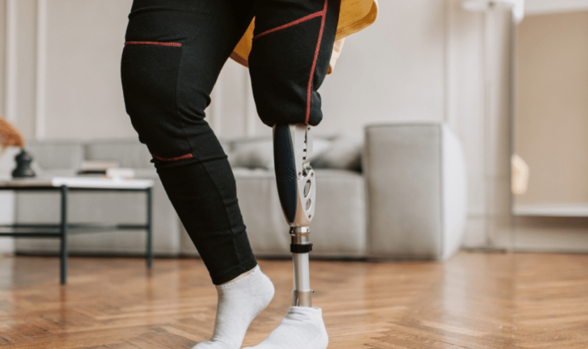

"El control de la diabetes no es solo responsabilidad del paciente, es un trabajo en equipo entre médicos, familia y sociedad".
Un 18,3% de la población mexicana tiene diabetes. El más común es la diabetes mellitus tipo 2. Según los datos más recientes, México ocupa el segundo lugar en América Latina en cuanto a la prevalencia de la diabetes.
¿Quiénes somos?
En DiabFast, tenemos como objetivo principal ayudar a las personas diabéticas que han sufrido alguna amputación a regresar a su vida cotidiana de la manera más rápida, cómoda, eficaz y sin afectar a su bolsillo. Fabricamos prótesis de alta calidad aptas para personas diabéticas que han sufrido alguna amputación, todo esto de la manera más rápida y costeable, además de ofrecer un seguimiento para mantener el bienestar y la comodidad cotidiana de nuestros pacientes.
RÁPIDA
Nuestros tiempos de fabricación y manufactura son muy reducidos a comparación de los de otras empresas, por lo que el paciente no sufrirá terapia física de adaptación a su amputación ni de readaptación a su prótesis.
COSTEABLE
Utilizamos moldes base para la fabricación de nuestras prótesis, por lo que su producción sería más veloz, ya que al tratarse de amputaciones muy generales, nos basamos en pesos promedios y tallas para su comodidad, además de ofrecer una personalización ajustable al finalizar la producción.
SEGUIMIENTO
Al adquirir tu prótesis con nosotros, continuaremos ofreciendote seguimiento para asegurarnos que tu prótesis sea exactamente lo que necesitas, garantizando tu bienestar, además de ofrecerte atención psicológica y terapéutica en caso de ser necesario.
¿Qué es la diabetes?

La diabetes es una enfermedad crónica caracterizada por mantener elevados los niveles de azúcar (glucosa) en sangre, esto, asociado a la deficiencia de insulina, afecta al corazón, ojos, riñones y sistema nervioso. actualmente es uno de los problemas de salud más grandes en México y todo el mundo, enfermedad que afecta en gran medida la calidad de vida de las personas, su economía y que es una de las principales causas de muerte, además de otros padecimientos asociados, como infartos, hipertensión, derrames cerebrales y la amputación de extremidades del cuerpo, como lo pueden ser los pies o las piernas completas.
¿Por qué una prótesis especial para diabéticos?

A diferencia de las prótesis diseñadas para amputaciones por traumatismos o accidentes, cuentan con diseños y materiales mucho más especializados que tienen la finalidad de brindar protección extra a la piel, previniendo heridas y mala circulación que pueda desencadenar en otra infección y riesgo de amputación mayor